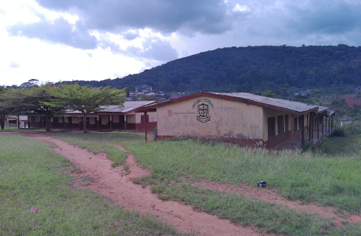
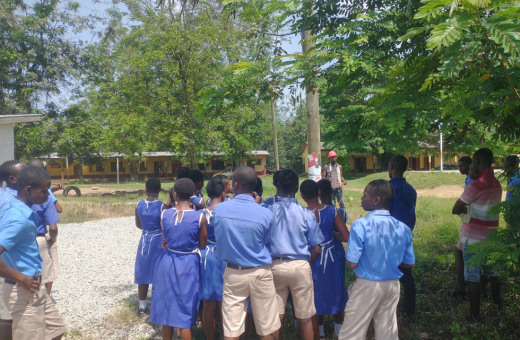
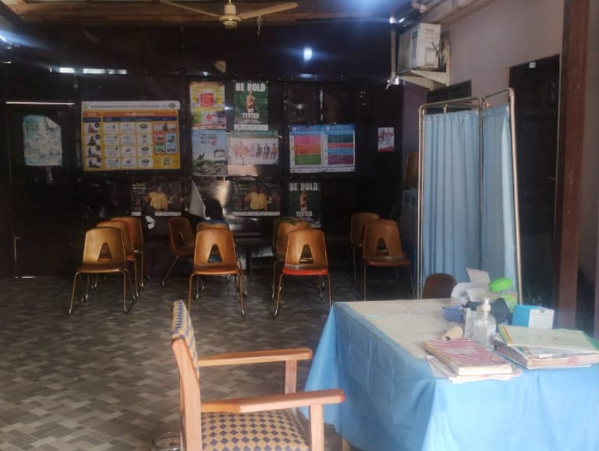
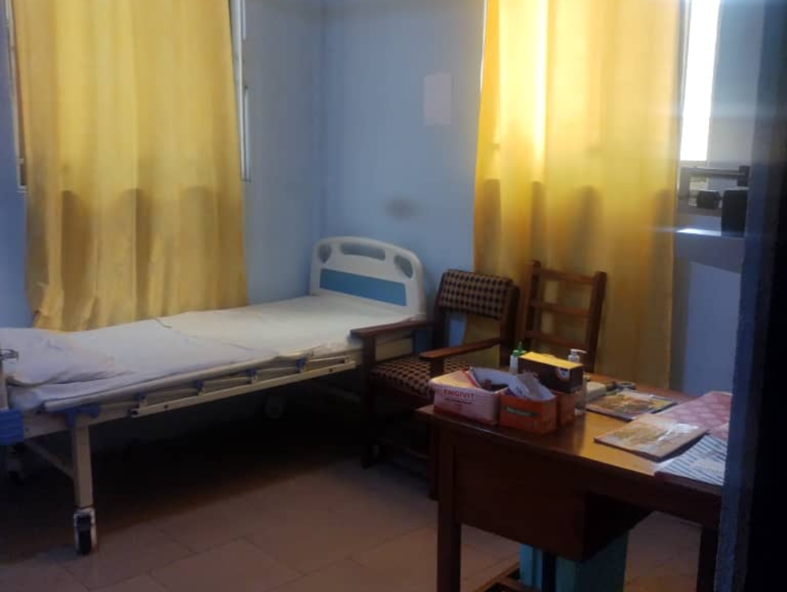
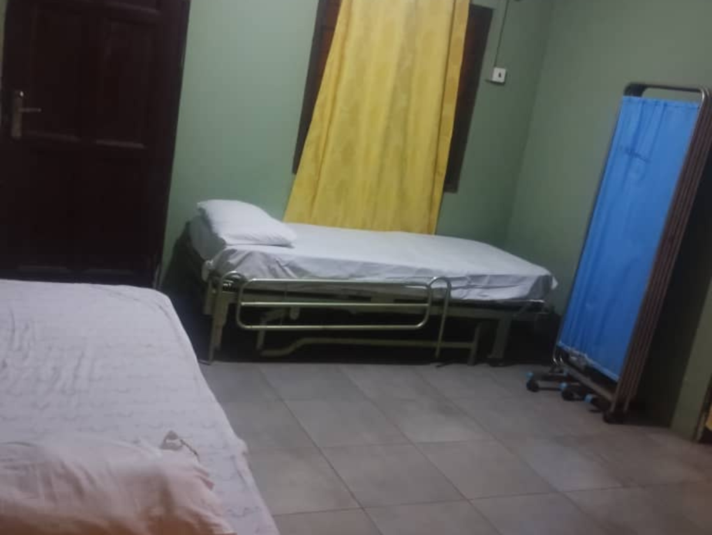
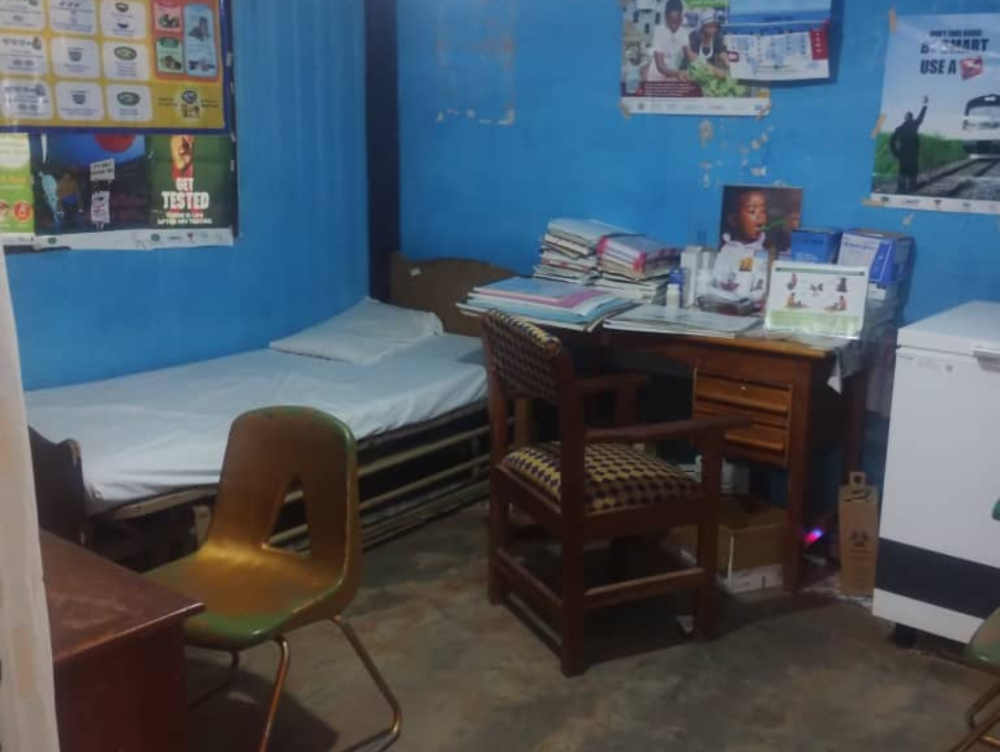

Obomeng Kwahu is a peri-urban community with a rich and deeply intertwined history rooted in the traditions of the Kwahu people. As part of the Benkum division within the Kwahu Traditional Council area and a proud member of the Aduana clan, Obomeng holds a significant place in the cultural landscape of the region. The community's heritage is marked by customs and practices passed down through generations, shaping its identity and way of life.
Despite its strong adherence to tradition, Obomeng has also embraced modern development, demonstrating a commitment to progress in various spheres. This balance between tradition and modernity is a defining characteristic of the community, evident in its evolving infrastructure, economy, and social fabric
Nana Effah Opinaman III has been a key figure in leading this progress, championing initiatives in education, healthcare, and infrastructure to improve the lives of residents and ensure a sustainable future for Obomeng. Today, Obomeng stands as a vibrant community, offering a unique blend of cultural heritage and contemporary living. Its scenic location amidst the Kwahu Ridge hills adds to its allure, attracting visitors and fostering a sense of pride among its inhabitants. The ongoing development efforts, combined with the preservation of its cultural identity, make Obomeng a dynamic and promising community within the Kwahu region.
The newly inaugurated football astro turf in Obomeng stands as a testament to the community's commitment to sports development and youth empowerment. This state-of-the-art facility provides a modern and safe playing surface for residents, fostering local talent, promoting healthy lifestyles, and serving as a vibrant hub for community engagement and recreational activities. The inauguration marked a significant milestone, celebrating the culmination of collaborative efforts to enhance the town's sporting infrastructure.
The Community Social Center in Obomeng serves as a crucial space for residents to gather and support one another during times of bereavement. This center provides a dignified and accessible venue for funeral ceremonies, offering comfort and solace to grieving families and facilitating important cultural traditions. Beyond its primary function, the center also plays a role in other social gatherings, strengthening community bonds and providing a place for various communal events.
Sungyata Eco-Village is a unique destination in Obomeng, designed to promote healing, wellness, and ecological awareness. This village offers a serene environment for visitors to connect with nature, experience traditional healing practices, and learn about sustainable living. With its focus on holistic well-being and community attraction, Sungyata Eco-Village not only provides a space for rejuvenation but also draws in tourists, contributing to the cultural and economic vitality of Obomeng.

The Clan Festival in Obomeng is a vibrant cultural celebration that brings together different clans within the community to showcase their unique heritage, traditions, and histories. This event typically features colorful processions, traditional music and dance, storytelling, and the display of clan-specific artifacts, fostering a strong sense of community identity and pride.
Prayer Mountain in Obomeng offers a unique spiritual experience combined with stunning natural scenery; it's a place where visitors can engage in prayer and meditation while enjoying panoramic views, often from a somewhat secluded or "hidden" vantage point. The serene atmosphere and elevated location make it ideal for reflection and connecting with nature..
Palace tours in Obomeng provide visitors with a fascinating glimpse into the traditional rule and rich history of the area, centered around the local palace or chief's residence. These tours offer insights into the chieftaincy system, traditional governance, and the cultural significance of the palace, often including a chance to view historical artifacts, ceremonial spaces, and learn about the lives of past and present leaders.
Obomengman Chief 2016-Present
Queen Mother 2024-Present.
Assembly Man 2020-present
Obomeng Unit Committee Chairman.

The upcoming events will feature the iconic Agwagwa Festival, where the Chief will announce details for this year's celebration.

A government-run school that also offers foundational education..
A Presbyterian church-affiliated school that provides foundational education.
Obomeng has a dedicated community clinic providing essential healthcare services to residents. We are committed to the well-being of our community members.
A virtual tour of our clinic facilities.
Our welcoming and comfortable OPD area.
A modern consultation room for private discussions.
Our Layin ward for patience who are admitted to the clinic. need.
We have a conducive RCH for the natives.
